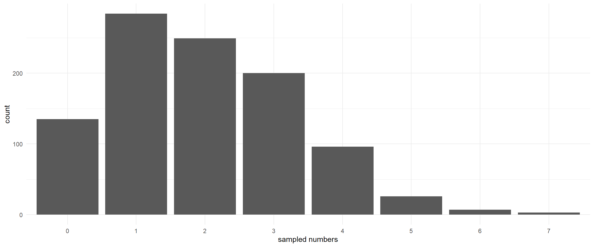

A hands-on R session on Zero-Inflated Poisson and other models for rare primate behaviors
João d’Oliveira Coelho
2025-04-02
Why count data is different
Count data is discrete, non-negative, often skewed
Examples in primatology:
Vocalization frequencies in vervets (few 0s)
Tool use occurrences in chimpanzees (some 0s)
Bipedalism bouts in chacma baboons (many 0s)
Why not use linear regression?
Violations of assumptions: non-normality, non-constant variance
The Poisson distribution
Poisson models count data where mean = variance
Probability mass function: \[ P(Y = k) = \frac{\lambda^k e^{-\lambda}}{k!} \]
Example I wanted: capuchin predation events
Example you get: Salamanders {glmmTMB} dataset
Price SJ, Muncy BL, Bonner SJ, Drayer AN, Barton CD (2016) Effects of mountaintop removal mining and valley filling on the occupancy and abundance of stream salamanders. Journal of Applied Ecology53 459–468. doi:10.1111/1365-2664.12585
The Poisson distribution (simulation)
lambda <-2# Mean and variancepois_sample <-rpois(1000, lambda) # Random generation of Poisson distributionggplot(data.frame(pois_sample), aes(x =as.factor(pois_sample))) +geom_histogram(stat ="count") +theme_minimal()

Salamander dataset
# Install if necessaryinstall.packages(c("glmmTMB", "ggplot2", "DHARMa"))# Load librarieslibrary(glmmTMB) # For modelinglibrary(ggplot2) # For visualizationslibrary(DHARMa) # For residual diagnosticsdata(Salamanders)str(Salamanders)